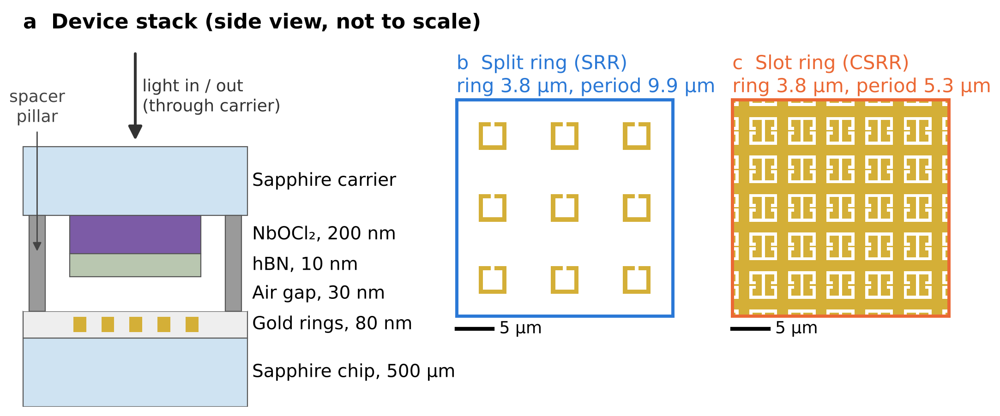
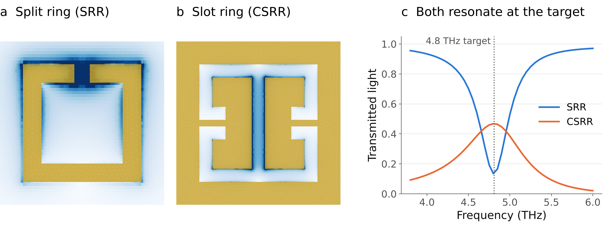

Terahertz resonators for coupling to the NbOCl₂ ferron
We design gold resonators that trap terahertz light at 4.8 THz, the frequency of the ferron (a collective lattice vibration) in the crystal NbOCl₂. The more of the resonator's field that reaches the crystal, the more strongly light and crystal interact.
Goal
Couple terahertz light strongly to the NbOCl₂ crystal at 4.8 THz, using a resonator chip we can build and measure.
Status
Two resonator designs sized to 4.8 THz and checked against published data. Crystal-plus-resonator simulations show the expected mode splitting. Device stack defined.
Next
Simulate the full stack versus the resonator–crystal gap, pin down the coupling strength, and fix fabrication dimensions.
Two designs for one device
Both designs use the same chip stack (Fig. 1a). Gold resonators sit on a sapphire chip. The crystal flake is held a few tens of nanometres above them on a second sapphire chip, with spacer pillars setting the gap. Light enters through the top chip.
Split ring (SRR): an array of gold rings, each with one gap (Fig. 1b). Simple and well understood, with a sharp resonance that tolerates a larger gap to the crystal.
Slot ring (CSRR): the inverse pattern, slots cut into a gold sheet (Fig. 1c). This is the design used in landmark vacuum-field experiments. It places more of its field in the crystal but needs a smaller gap.

Figure 1. The device. (a) Layer stack, not to scale. (b, c) The two resonator arrays, drawn to scale. Each chip will carry arrays in several ring sizes, to tune the resonance across the crystal frequency.

Figure 2. Simulated resonances. (a, b) Electric field (darker blue is stronger) at resonance. The split ring concentrates it in its gap; the slot ring spreads it along its slots. (c) Both resonate at the 4.8 THz target.
What we found
Both designs hit the target. Sized for the real substrate, they resonate at 4.8 THz (Fig. 2c).
The crystal splits each resonance in two. With NbOCl₂ added, the split is about 0.3 THz for the split ring and 0.5 THz for the slot ring. As the crystal frequency is tuned in the simulation, the two peaks push apart instead of crossing. That is the hallmark of light and crystal mixing. A precise coupling value needs a more complete model, now in progress.
The slot ring reaches the crystal more. It puts 12.5% of its field in the crystal region, against 10.5% for the split ring.
The substrate matters but is manageable. On silicon instead of sapphire, the pattern must be about 4% smaller and the coupling is about 3–4% weaker. GaAs is the weakest choice.
How we check the simulations
Check
Reference
Simulation
Published split-ring array (Withayachumnankul et al., Opt. Express 2012)
0.407 THz
0.412 THz (+1.2%)
Published slot-array screen (Ludvig-Osipov et al., IEEE Trans. Antennas Propag. 2020)
transmission band centre and width
within 0.2% and 0.4%
Exact law: a pattern and its inverse transmit complementary amounts (Babinet)
sum = 1
holds to within 1% away from resonance; resonances agree within 0.4%
Light through 13 substrate and layer materials
exact thin-film theory
agrees to better than 0.001%
Comparisons with further published devices are in progress.
Next steps
Simulate the full stack for both designs, from crystal contact out to a 300 nm gap, in reflection as measured. This sets the pillar height.
Pin down the coupling strength with a complete light–crystal model.
Choose the design and provide fabrication dimensions, then fabricate and measure.